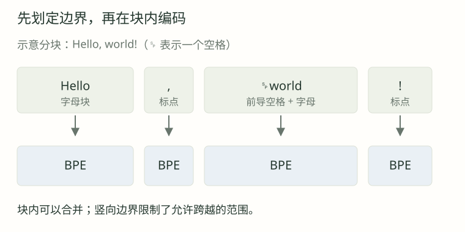

01 · 为什么“hello”和“ hello”都只有一个 token，ID 却不同？
展开逐步解析
前导空格是原文的一部分。词表可以分别保存不带空格与带空格的片段；token 数相同不代表字节相同。删除空格会改变输入。
合并规则之外，还有分段、空格与特殊标记。
真实 tokenizer 通常先预分词，再对各片段独立执行 BPE。这样可以限制“词 + 标点”等跨类别合并。

片段拼接应保留原文，包括空格和标点。各段转成字节、独立编码后，再连接 IDs。
普通文本 → 预分词片段 → 每段 UTF-8 字节 → 段内 BPE → token IDs
特殊 token 路径：显式识别许可标记 → 对应保留 ID训练与使用必须采用相同的预分词和合并规则。
GPT-2 正则区分字母、数字、符号和空白，并处理缩写。字母分支允许前导空格，因此空格可与词合成一个 token。
例如 Hello, world! 可分成 Hello、,、 world、!，再在各块内做 BPE。
import regex
pattern = r" ?\p{L}+| ?\p{N}+|[^\s\p{L}\p{N}]+|\s+"
parts = regex.findall(pattern, "Hello, world!")
assert "".join(parts) == "Hello, world!"以下是简化模式，需要第三方 regex；完整行为请使用实际 tokenizer。
r50k_base、cl100k_base、o200k_base 是编码配置，包含词表、rank、预分词与特殊标记。使用模型时需核对对应的编码映射。
| 固定文本 | r50k_base | cl100k_base | o200k_base |
|---|---|---|---|
| Hello, world! | 4 tokens | 4 tokens | 4 tokens |
| 你好，世界！ | 14 tokens | 7 tokens | 4 tokens |
| A中🙂 | 4 tokens | 4 tokens | 3 tokens |
下表是 tiktoken 0.12.0 的固定实测结果；不同文本的缩短比例会变化。
ID 仅在所属词表内有效；不要根据配置名称推断所有 ID 都连续。
实验用 get_encoding 固定编码；自动映射可用 encoding_for_model，未知模型名应报错处理。
import tiktoken
enc = tiktoken.get_encoding("cl100k_base")
text = "Hello, world!"
ids = enc.encode(text)
print(ids) # [9906, 11, 1917, 0]
chunks = [enc.decode_single_token_bytes(i) for i in ids]
assert b"".join(chunks).decode("utf-8") == text用逐 token 十六进制字节检查边界，再拼接验证往返；单个 token 未必能独立解码成文字。
cl100k_base 中，hello 是 [15339]， hello 是 [24748]。前导空格会影响编号。
<|endoftext|> 可作为特殊标记，也可按普通文本处理；调用者需明确选择。
enc = tiktoken.get_encoding("cl100k_base")
# 默认对识别到但未允许的保留拼写报错
# enc.encode("<|endoftext|>") # ValueError
special = enc.encode("<|endoftext|>", allowed_special={"<|endoftext|>"})
ordinary = enc.encode("<|endoftext|>", disallowed_special=())
print(special) # [100257]
print(len(ordinary)) # 7，作为普通字符编码disallowed_special=() 按普通文本编码；allowed_special 显式允许特殊识别。tokenizer 标记与模型 API 控制字段并非同一接口。
len(enc.encode(text)) 统计这段字符串的 token；聊天请求还可能有角色、工具与多模态序列化开销。
先估算输入与输出 token，再套用服务当前计费规则；字符数只能粗估。
切换预置文本对照三套编码；网页展示固定实测快照，自定义输入请运行配套脚本。
先作答，再展开解析。
前导空格是原文的一部分。词表可以分别保存不带空格与带空格的片段；token 数相同不代表字节相同。删除空格会改变输入。
不能。这是特定文本在三种表示下的长度测量。语言模型训练、推理与任务效果并未参与这项比较；其他文本的压缩差异也可能不同。
token 的字节可能只占某个字符的一部分。字节输出保留确切内容；独立 UTF-8 解码可能报错或替换，拼接完整字节序列后再解码才是往返检查。
前者允许指定保留拼写识别为特殊 ID；后者关闭相应拒绝检查，让未被允许识别的拼写走普通字符路径。本课 endoftext 的结果分别为一个特殊 ID 与七个普通 token。
通常不能。ID 是词表索引，旧模型的向量表和输出头与原编码匹配；相同整数可能代表另一片段，甚至超出范围。需要明确的 tokenizer/模型兼容约定。
请求可能额外序列化角色、边界、工具结构和其他模态。纯字符串计数只验证了该字符串本身，完整请求还要按相应服务协议计算。